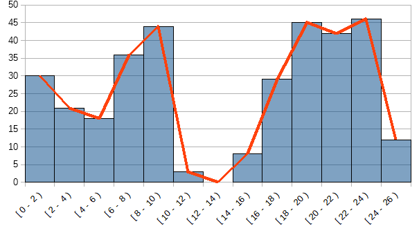

Es un gráfico en que se representan las variables continuas, por medio de rectángulos que tienen por base la longitud del intervalo que representa, sobre el el eje de conceptos, y su altura es la frecuencia, que dependerá de la escala utilizada. Tiene que cumplir las siguientes normas generales:
- Si los intervalos son iguales las barras tendrán igual anchura de otro modo será diferentes
- La longitud de la barra es proporcional a la cantidad representada.
- No hay espacio entre barras puesto que es una variable continua
- Las barras se pueden disponer vertical u horizontalmente

Se construye igual que un diagrama de barras. SI unimos los puntos medios de los rectángulos obtendremos el polígono de frecuencias
